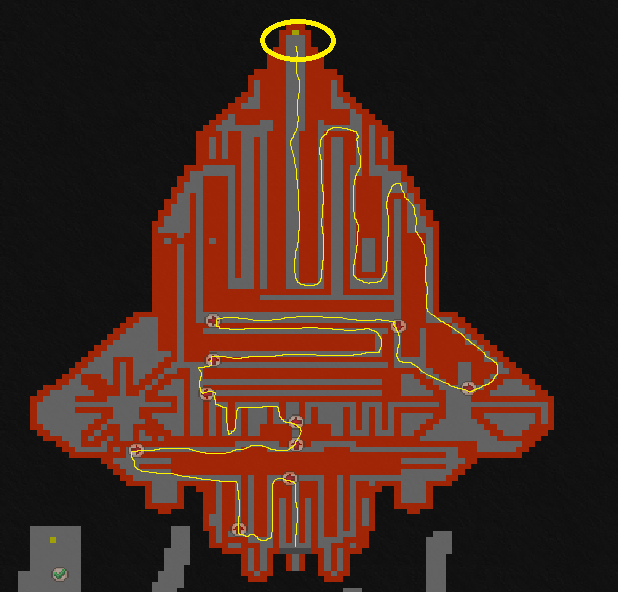
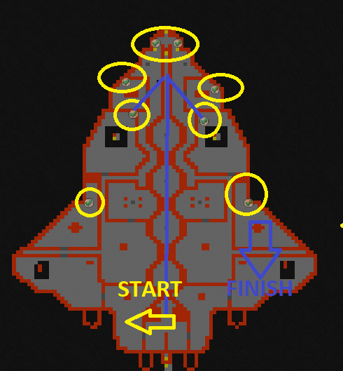
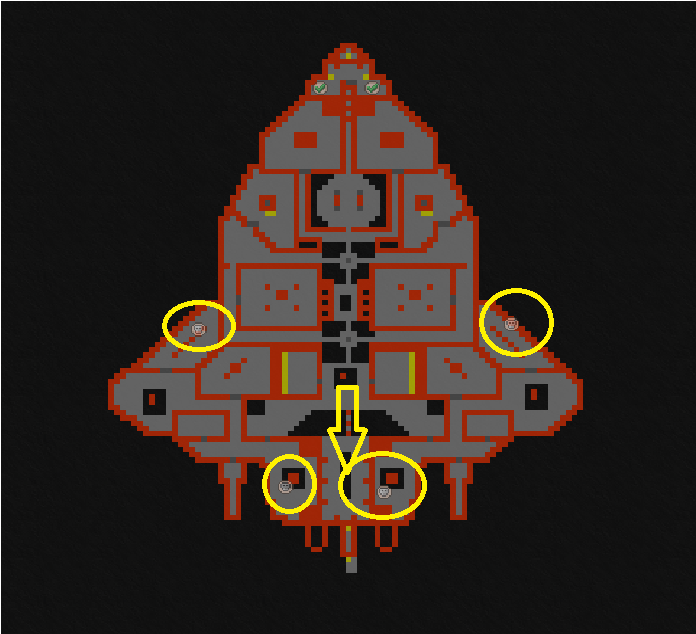
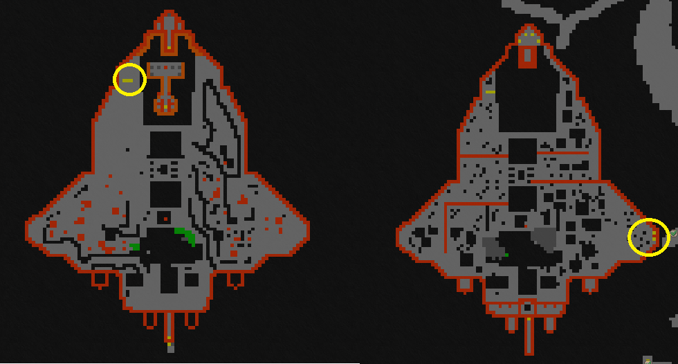

Yalahar spaceship quest
Rewards:
Goldilocks Orbital ring
White dwarf ring
Ring of Nebula
King Zenith outfit
The Key to the Deeply Hidden Chambers at the Great King Zenith's Massive Kingdom
Recommended level:
group of at least 3 players: 3000+
Requirements:
Finished Yalahar circle of mysteries (33 scopes)
Finished Spaceship key Quest
Now you have achieved some levels if you have came here all by yourself. But brace yourself as this ain’t nothing like the last quests have been. This can be either great hunting or total massacre.
Let’s start the quest from Yalahar the Spaceship checkpoint. First up: maze. Get through the maze up to the North and hop into the teleporter. There’s alot bosses along the way here.

Now you need to pull 10 scope levers in order to get past the stones on your path. Follow the road from West and as you have pulled all you will come back where you started and go full North from the middle. The lenses have to face to the right again, same as in Yalahar circles.


Now here you have 4 bosses you need to kill. Doesn’t matter in which order you take them down but in order to get through, player has to make the final blow. Otherwise you need to wait. After killing those go back to the starting point and go South with Procyon and Orbithrax.

Now it’s simple brute force, no need for brains. Get past all the monsters and go to the teleports. South one is for quest (as the sign says) and the North one is for upgrades if you have something to make.
